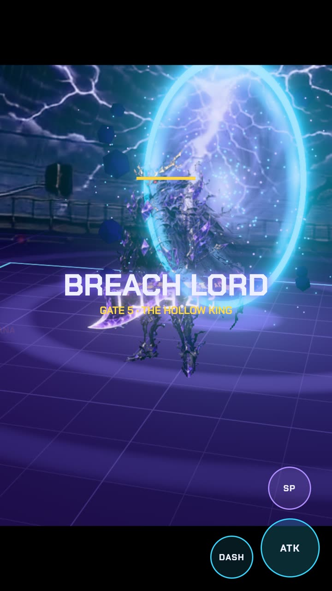
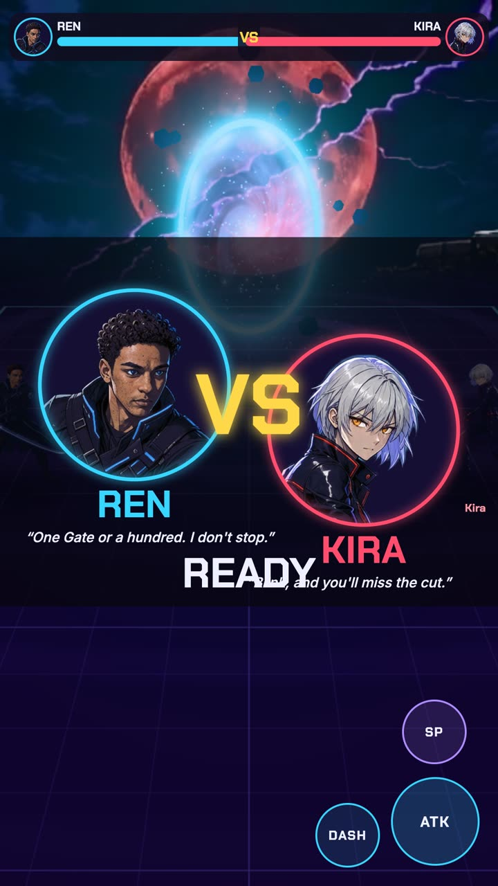
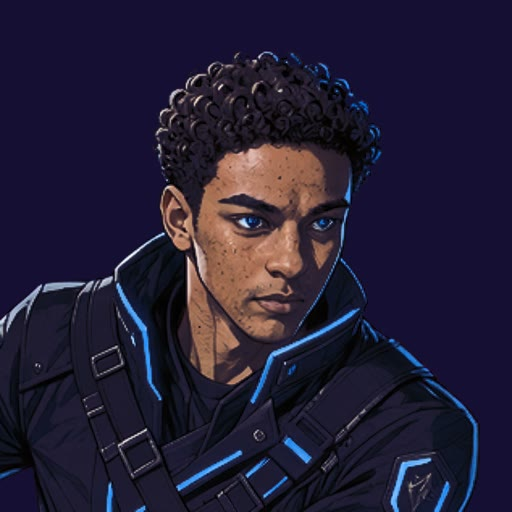
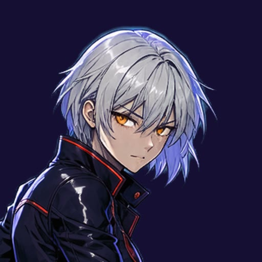
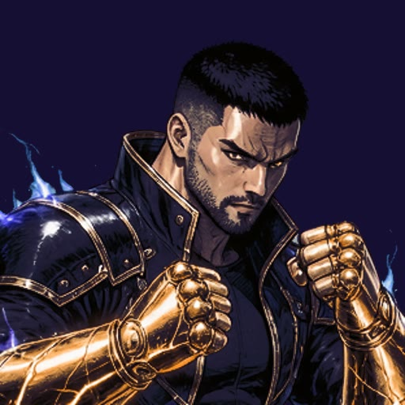
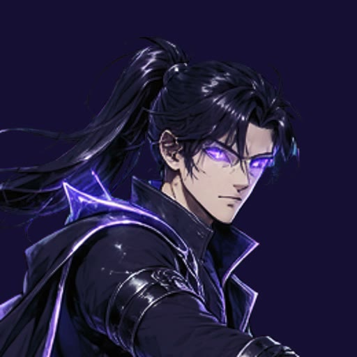
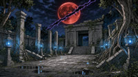
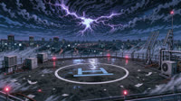

Endless Gates. Real combat.

A boss every fifth Gate
Each Gate is harder than the last. Manual combos with aim assist, dash i-frames, a special meter, hit-stop and juggles. Every fifth Gate a Breach Lord walks out of the rift. Weapons drop between Gates: Flame Katana, Thunder Blade, Rift Twin Daggers, and the Hollow King's Cleaver.

1v1 a friend by link
Tap "1v1 a friend online" and send the link. You fight live, peer-to-peer in the browser with no game server. VS splash, voiced quotes, a K.O. cinematic, and a victory card that says "Think you can take me?"
Pick a Crasher, free forever
No selfie? Four original fighters ship with the game, each with a full LTX-animated moveset and a voiced line.

REN“One Gate or a hundred. I don't stop.”
KIRA“Blink, and you'll miss the cut.”
BRANN“Every Gate breaks the same way. Loud.”
VEX“The rift chose me. I'm returning the favor.”Fight anywhere, even your own street
Four living arenas, each a FLUX 3 painting animated by LTX-2. Or upload a photo of your place and ComfyUI turns it into a rift-torn battleground.
 Neon Crossing
Neon Crossing
Sunken Temple
Skyline Roof